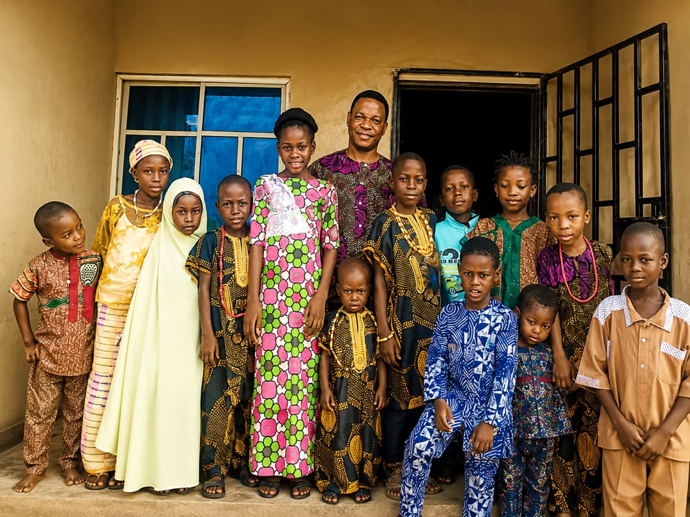

At KENWIN, every child is known by name, encouraged to ask questions, and given the confidence to grow, from their first day in Nursery to their last in Primary 6. We exist to eradicate illiteracy in our society, one child at a time.

KENWIN Nursery & Primary School was founded on a simple belief: young children learn best when they feel safe, seen, and genuinely excited to come to school. Every classroom is led by teachers who know each child's name, strengths, and the little things that make them light up.
We combine a structured, age-appropriate curriculum with plenty of room for play, curiosity, and character-building, because the years from Nursery to Primary 6 shape how a child feels about learning for life.
Read Our Full StoryFrom first steps in Nursery to confident Primary 6 graduates, our curriculum grows with your child.
Play-based learning that builds early literacy, numeracy, motor skills, and social confidence, in a warm, closely supervised environment.
See Nursery CurriculumA rigorous, well-rounded curriculum from Primary 1 to 6, covering core subjects, creative arts, and character education that prepares pupils for secondary school.
See Primary CurriculumA curriculum built for real academic progress, tracked closely from term to term.
Small class sizes mean every child gets the attention they deserve.
A secure, nurturing environment where your child can simply be a child.
Honesty, respect, and kindness taught alongside every subject.
"My daughter used to be shy about speaking up. Within a term at KENWIN, she was raising her hand for everything."
"The teachers actually know my son, his strengths, what he struggles with. That kind of attention is rare."
"KENWIN feels like an extension of home. Safe, warm, and genuinely focused on the children."
Spaces are filling for the new session. Book a campus visit or start your application today.